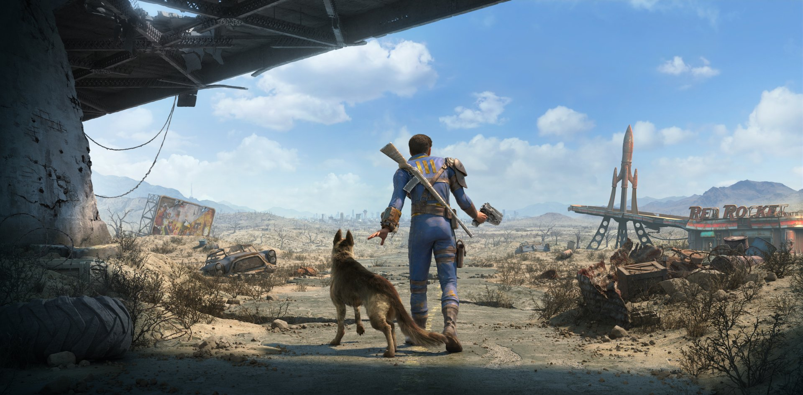

Fallout 4
Initial Release exceeded GTA 5 sales
Fallout 4 is an action role-playing game developed by Bethesda Game Studios and published by Bethesda Softworks. It is the fourth main game in the Fallout series and was released worldwide on November 10, 2015, for Microsoft Windows, PlayStation 4 and Xbox One. The game is set within an open world post-apocalyptic environment that encompasses the city of Boston and the surrounding Massachusetts region known as "The Commonwealth". The main story takes place in the year 2287, ten years after the events of Fallout 3 and 210 years after "The Great War", which caused catastrophic nuclear devastation across the United States.
.jpg)
The player assumes control of a character referred to as the "Sole Survivor", who emerges from a long-term cryogenic stasis in Vault 111, an underground nuclear fallout shelter. After witnessing the murder of their spouse and kidnapping of their son, the Sole Survivor ventures out into the Commonwealth to search for their missing child. The player explores the game's dilapidated world, completes various quests, helps out factions, and acquires experience points to level up and increase the abilities of their character. New features to the series include the ability to develop and manage settlements and an extensive crafting system where materials scavenged from the environment can be used to craft drugs and explosives, upgrade weapons and armor, and construct, furnish and improve settlements. Fallout 4 also marks the first game in the series to feature full voice acting for the protagonist.
Fallout 4 received positive reviews from critics with many praising the world depth, player freedom, overall amount of content, crafting, and soundtrack, while criticism was mainly directed at the game's visuals and technical issues. The game was a commercial and critical success, generating $750 million within the first 24 hours of its launch, and received numerous accolades from various gaming publications and award events, including the respective awards for Game of the Year and Best Game at the Academy of Interactive Arts & Sciences and British Academy Games Awards. Bethesda has released six downloadable content add-ons, including the expansions Far Harbor and Nuka-World.